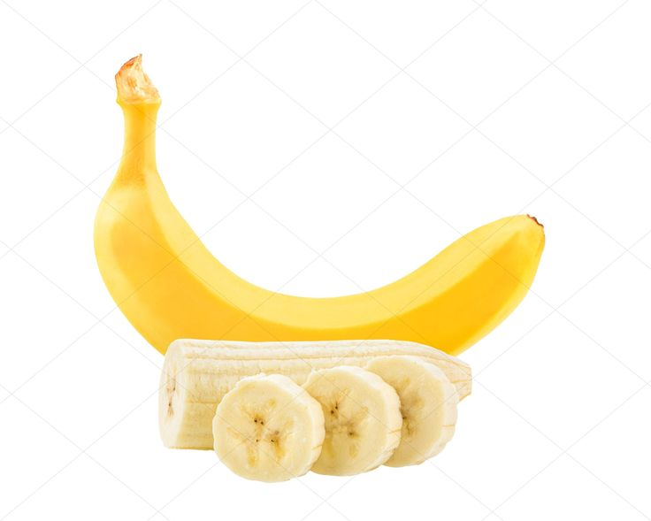
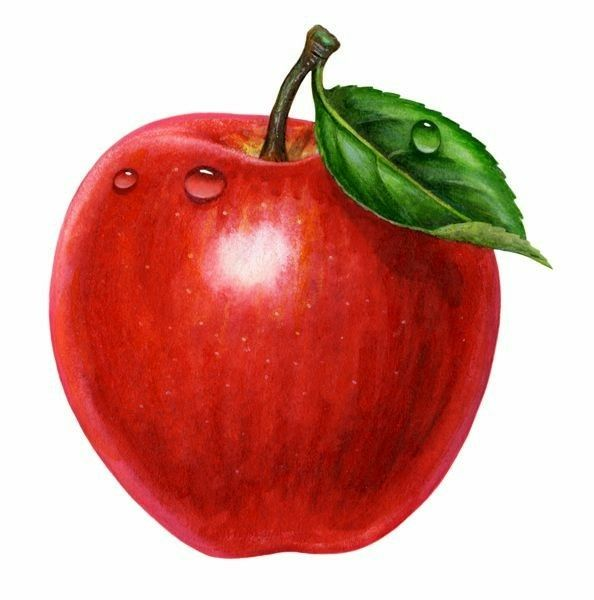
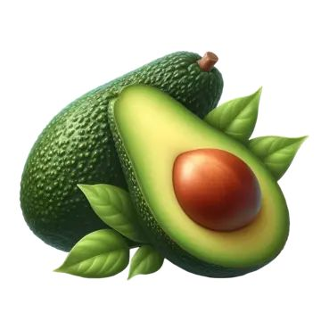
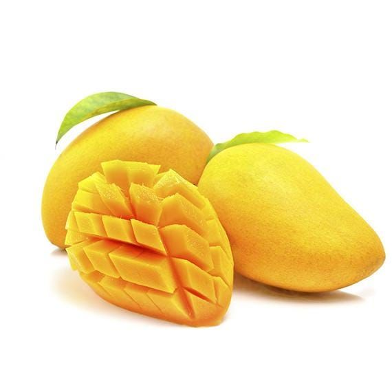
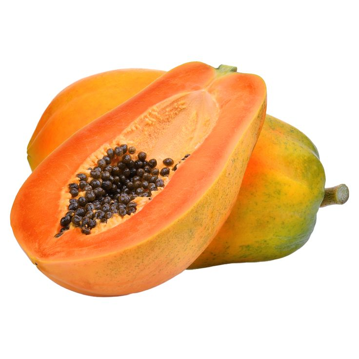
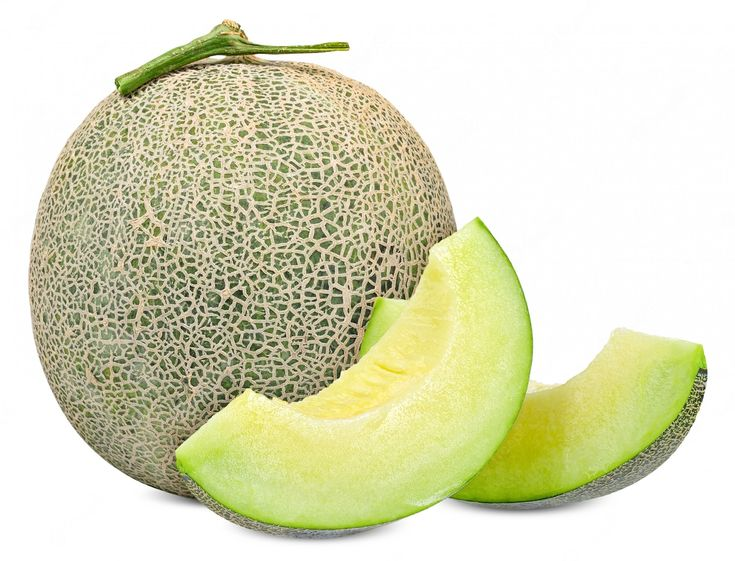
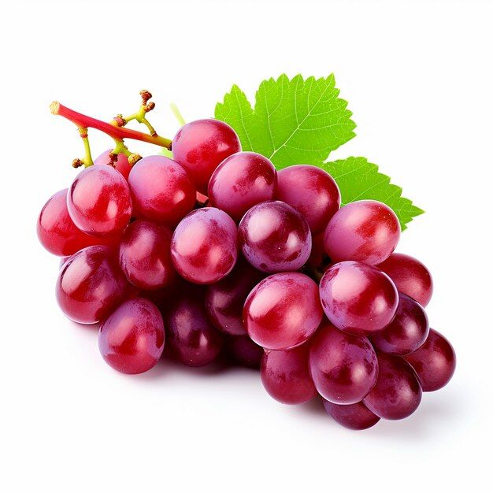

Kenali Berbagai Buah Sehat untuk Kesehatanmu
Buah-buahan adalah salah satu sumber terbaik vitamin, mineral, dan serat yang dibutuhkan oleh tubuh. Mengonsumsi buah secara teratur dapat meningkatkan kesehatan secara keseluruhan, memperkuat sistem imun, dan menjaga berat badan ideal. Mari kita lihat beberapa buah yang sering kita konsumsi sehari-hari.
Pisang
Pisang mengandung banyak kalium yang baik untuk kesehatan jantung dan mengurangi risiko tekanan darah tinggi. Pisang juga membantu pencernaan karena kaya akan serat.
Apel
Apel terkenal karena mengandung serat pektin yang baik untuk kesehatan pencernaan. Selain itu, apel juga kaya akan vitamin C yang dapat meningkatkan kekebalan tubuh.
Alpukat
Alpukat makanan tinggi serat dan kalium yang dapat mengoptimalkan fungsi pencernaan. Di samping itu, alpukat juga termasuk dalam makanan rendah fruktosa, sehingga tidak berisiko menimbulkan penumpukan gas dan aman dikonsumsi oleh orang dengan riwayat penyakit asam lambung.
Mangga
mangga mengandung berbagai nutrisi penting yang dapat membantu menjaga kesehatan tubuh kita. Mangga kaya akan vitamin C. Vitamin ini adalah antioksidan kuat yang membantu melindungi tubuh dari kerusakan akibat radikal bebas.
Pepaya
Pepaya memiliki banyak manfaat kesehatan, termasuk melancarkan pencernaan berkat enzim papain, serta mencegah sembelit dengan kandungan seratnya. Buah ini kaya akan vitamin C yang memperkuat sistem kekebalan tubuh, menjaga kesehatan kulit, dan mencegah kerusakan akibat radikal bebas. Selain itu, pepaya mendukung kesehatan jantung dengan membantu menurunkan tekanan darah dan kolesterol, menjadikannya pilihan buah yang baik untuk kesehatan tubuh secara keseluruhan.
Melon
Melon memiliki berbagai manfaat kesehatan, terutama karena kandungan air yang tinggi, yang membantu menjaga tubuh tetap terhidrasi. Buah ini kaya akan vitamin C dan antioksidan, yang dapat meningkatkan sistem kekebalan tubuh dan melindungi sel-sel dari kerusakan akibat radikal bebas. Melon juga mengandung serat yang baik untuk pencernaan, serta kalium yang dapat membantu menjaga tekanan darah dan kesehatan jantung. Selain itu, melon rendah kalori, sehingga cocok untuk dikonsumsi dalam program diet sehat.
Anggur
Anggur kaya akan antioksidan, seperti resveratrol dan flavonoid, yang membantu melindungi tubuh dari kerusakan akibat radikal bebas dan dapat menurunkan risiko penyakit jantung. Buah ini juga mengandung vitamin C dan K yang mendukung sistem kekebalan tubuh serta kesehatan tulang. Anggur memiliki sifat antiinflamasi dan dapat membantu melancarkan aliran darah, sehingga baik untuk kesehatan pembuluh darah dan jantung. Selain itu, serat dan air dalam anggur membantu pencernaan, dan kandungan kalorinya yang rendah menjadikannya pilihan camilan sehat.